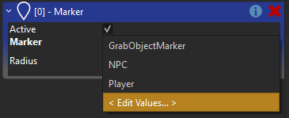

Spatial System
Every world has a spatial system. Spatial systems are responsible for sorting game objects by their position and size. They are utilized to efficiently find all objects within a volume, such as a box, a sphere or a view frustum. This is mainly used by the renderer to do frustum culling, but is also available to all other code. Obviously the spatial system needs to keep track of moving objects and update its index accordingly.
Spatial System Setup
ezSpatialSystem is the base class for all spatial systems. During the construction of an ezWorld, a custom implementation can be provided through the ezWorldDesc. By default ezSpatialSystem_RegularGrid is used, which is optimized to handle arbitrary situations with good performance.
Implementing a custom spatial system can make sense when you have a highly specialized use case. For example, if you have a strictly tile-based 2D game, where you know that all sprites are below a fixed size, and you always have a dense grid without holes, you can write a spatial system that takes advantage of this knowledge and therefore outperforms the default implementation.
However, unless you determine that the spatial system is a clear performance bottleneck, and you have domain specific knowledge that could be a big advantage to speed things up, there is no reason to consider writing your own.
Since there is exactly one spatial system per world, it usually means that the choice of a system is made for a type of game. In theory, though, one could use different systems for different types of levels, as well.
Accessing the Spatial System
In C++ code you get access to the world's spatial system through ezWorld::GetSpatialSystem().
When using other languages bindings the spatial system may not be exposed directly. For example, when using TypeScript, the most useful functions are exposed directly through ez.World, for example ez.World.FindObjectsInBox() and ez.World.FindObjectsInSphere().
Spatial Data Categories
Every piece of spatial data is associated with a category. For example, rendering data is either in the category "RenderStatic" or "RenderDynamic". This is mainly used to separate spatial information into distinct groups, so that during a spatial query, data that is irrelevant can be filtered out quickly.
For efficiency reasons, categories are represented with bitmasks internally, which is why there can only be up to 32 categories. You should assume that the core engine uses at least 5 categories already.
Configuring Spatial Data Categories
In C++ code you register a spatial data category through ezSpatialData::RegisterCategory(). This will return a category object which can be used for spatial queries later:
ezSpatialData::Category RtsSelectableComponent::s_SelectableCategory = ezSpatialData::RegisterCategory("Selectable", ezSpatialData::Flags::None);
When using the editor, there are components, such as the marker component, which allow you to select a category from a predefined list. This list is project specific. When you click on such a dropdown box, the last entry allows you to open an editor to configure the available categories:

The Invalid Category
Some components 'add' their bounds to a ezMsgUpdateLocalBounds using ezInvalidSpatialDataCategory. This means that they want to specify their bounds, but do not want to add anything to the spatial system. This is useful for components that do have a perceived size, such as physics shapes, which should be visible when selecting these objects in the editor, but where there is no benefit of inserting this into the spatial system.
Exposing Game Objects to the Spatial System
The spatial system only knows about game objects, it does not differentiate by components. However, which game objects are inserted into it and under which categories, is handled by components.
The world sends the message ezMsgUpdateLocalBounds to all components when it determines that an update is necessary. This can also be triggered manually by calling ezGameObject::UpdateLocalBounds() when spatial data, such as which category to use, has been modified.
Components can handle this message and add spatial information to it. For 3D objects one would use something like the bounding sphere of a mesh, but it is also possible to use more abstract spatial data. For example the RTS sample has an RtsSelectableComponent which is attached to all units that should be selectable by the player. Although the RtsSelectableComponent doesn't have a visual representation, it reacts to ezMsgUpdateLocalBounds to add spatial data, which can then be used to efficiently look up units under the mouse cursor.
void RtsSelectableComponent::OnUpdateLocalBounds(ezMsgUpdateLocalBounds& msg)
{
ezBoundingBoxSphere bounds;
bounds.m_fSphereRadius = m_fSelectionRadius;
bounds.m_vCenter.SetZero();
bounds.m_vBoxHalfExtends.Set(m_fSelectionRadius);
msg.AddBounds(bounds, s_SelectableCategory);
}
Don't forget to register the message handler in the reflection block:
EZ_BEGIN_MESSAGEHANDLERS
{
EZ_MESSAGE_HANDLER(ezMsgUpdateLocalBounds, OnUpdateLocalBounds)
}
EZ_END_MESSAGEHANDLERS;
Querying the Spatial System
Once you have spatial data inserted into the system, you can use it to efficiently query for objects within a volume.
When calling functions such as ezSpatialSystem::FindObjectsInSphere() you have to provide a bitmask of categories. That's because you can request to get objects from multiple categories at the same time. You can get this bitmask by calling ezSpatialData::Category::GetBitmask() on a category object.
void RtsGameState::InspectObjectsInArea(const ezVec2& position, float radius, ezSpatialSystem::QueryCallback callback) const
{
ezBoundingSphere sphere(position.GetAsVec3(0), radius);
ezSpatialSystem::QueryParams queryParams;
queryParams.m_uiCategoryBitmask = RtsSelectableComponent::s_SelectableCategory.GetBitmask();
m_pMainWorld->GetSpatialSystem()->FindObjectsInSphere(sphere, queryParams, callback);
}
In other language bindings you may instead need to pass in a list of all the desired categories by name.
Spatial System vs. Physics Engines
Both the spatial system, as well as physics engines allow you to do spatial queries. There are cases where a problem can be solved using either system, but generally they are meant to complement each other.
If you want to query for things that already need to have a physical representation, and therefore will be handled by the physics engine anyway, it is best to leverage the physics engine to query for such objects. For example a shockwave effect that is supposed to push objects away, only makes sense to be applied to physically simulated objects. Therefore, querying which objects are close-by, to figure out what objects to apply the effect to, should be done through the physics engine, and there is no reason to even have information about these objects in the spatial system.
On the other hand, things like the RtsSelectableComponent (see above) could be achieved by setting up fake physics actors so that they can be found with physics queries. The performance cost for doing so would be unnecessary high though, as the physics engine would perform additional maintenance that is ultimately not needed, and it may waste precious resources such as collision layers. Here, using the spatial system makes much more sense.
Note:
If you require doing raycasts or queries against meshes, you will need to use the physics engine, as the spatial system only works with very basic shapes.
Spatial System vs. Tags
The spatial data categories are very similar to tags. The difference is, that tags are set up on game objects and they don't have any spatial quality. A game object can have many tags, but not be registered spatially and therefore cannot be found through spatial queries. On the other hand, because of this, tags have nearly no performance overhead, whereas spatial data must be updated whenever an object moves.
Ultimately, both systems can be used to solve many of the same problems. When you need to be able to inspect an area and find all objects of a certain kind, you should use spatial data, for example through a marker component. If, however, you need to semtantically label objects, but do not require to find them spatially, prefer tags to not waste performance.